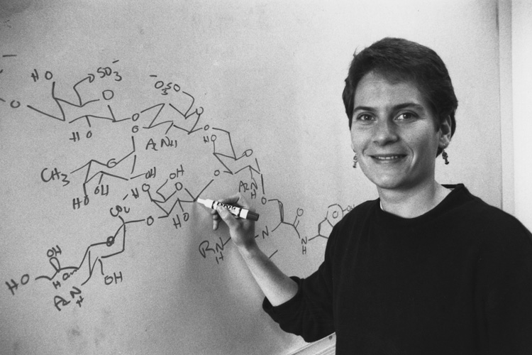

Carolyn Ruth Bertozzi
Biografia
A química norte-americana Carolyn Bertozzi considera que o seu caminho para a ciência foi quase subconsciente. Seu pai era professor de física no Instituto de Tecnologia de Massachusetts, mas quando ela começou na vizinha Universidade de Harvard, ela ficou tentada a se formar em música. “Isso foi impopular entre os meus pais, um primo seguiu a carreira musical e acabou trabalhando num banco para pagar o aluguel”, diz ela. 'Eu estava um pouco tímido em desafiá-los.' Em vez disso, ela escolheu o curso de pré-medicina, que incluía aulas de matemática e ciências, e declarou-se formada em biologia no final do primeiro ano de faculdade. “Eu realmente não gostei das aulas de química geral no meu primeiro ano”, afirma ela. 'Era apenas uma caixa que eu precisava verificar.'
Os alunos de graduação em ciências de Harvard são incentivados a trabalhar em laboratórios de pesquisa durante o verão. “Tentei conseguir um emprego em um laboratório de química orgânica depois do meu [segundo] ano, mas todos disseram que estavam lotados”, diz ela. Em vez disso, ela acabou em um laboratório estudando danos oxidativos à membrana no hospital Massachusetts Eye and Ear. Ela já trabalhava com a professora Irene Kochevar como “servidora” algumas horas por semana durante o período letivo, visitando a biblioteca da faculdade de medicina a cinco quilômetros de distância com um grande saco de moedas para fotocopiar papéis.
Naquela época, a cirurgia ocular a laser era uma coisa nova. “Era importante entender se os tecidos oculares seriam danificados pelos lasers cirúrgicos”, diz ela. Foi uma experiência ligeiramente caótica, ela ajudou a criar “fantasmas” a partir de eritrócitos aplicando choques osmoticamente para que saíssem das membranas e depois irradiando-os com um laser para ver se seriam danificados.
Também não houve nenhum trabalho de síntese orgânica para ela no verão seguinte. 'Fiz o primeiro ano do curso de pós-graduação em físico-química orgânica e conheci alguns dos alunos de pós-graduação. Eu visitava seus laboratórios e pensava que eles poderiam me apresentar ao seu PI [investigador principal], o que poderia me ajudar a conseguir um emprego de verão”, diz ela. Mas isso não aconteceu. 'Comecei a ter a sensação de que talvez não fosse uma boa ideia ser químico orgânico.'
Em vez disso, ela conseguiu um emprego em um laboratório de bioquímica, mas conheceu Joe Grabowski, professor assistente de físico-química, que dava aulas de pós-graduação. Seu laboratório tinha apenas um aluno de pós-graduação, naquela época, os professores assistentes de Harvard achavam difícil recrutar alunos de pós-graduação devido à incerteza sobre suas próprias perspectivas de longo prazo. A taxa de sucesso na obtenção de estabilidade foi baixa, os professores efetivos eram normalmente recrutados de fora – deixando os novos académicos a lutar até se mudarem para outra universidade.
No início dos anos 2000, Bertozzi e Steve Rosen co-fundaram a Thios Pharmaceuticals, a primeira empresa a atingir vias de sulfatação. Em 2008, Bertozzi fundou sua própria startup: Redwood Bioscience de Emeryville , Califórnia [17] . A Redwood Bioscience é uma empresa de biotecnologia que utiliza SMARTag, uma tecnologia de modificação de proteínas específicas de locais que permite que pequenos medicamentos se liguem a locais de proteínas e podem ser usados para ajudar a combater tumores.
Carolyn Bertozzi é homossexual, algo que ela declara publicamente desde a década de 1980. Ele tem esposa e três filhos.
Em 2010, foi a primeira mulher a receber o Prêmio Lemelson-MIT. É membro da Academia Nacional de Ciências (2005), da Accademia Cesarea Leopoldina (2008), da Academia Nacional de Medicina (2011) e da Academia Nacional de Inventores (2013). Em 2014, ela se tornou chefe da revista científica ACS Central Science da American Chemical Society. Desde 2021 ela é membro da Accademia dei Lincei. Em fevereiro de 2022 recebeu o Prêmio Wolf de Química. Ela recebeu o Prêmio Nobel de Química em outubro de 2022 junto com Morten P. Meldal e Karl Barry Sharpless, pelo desenvolvimento da química click e da química bioortogonal.
"As oportunidades passam por você e, se você tiver sorte, notará algumas. Mas as oportunidades estão sempre passando e, se você as vir, entre no veículo e veja aonde o caminho o leva." - Carolyn Bertozzi